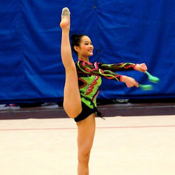
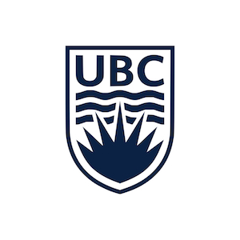
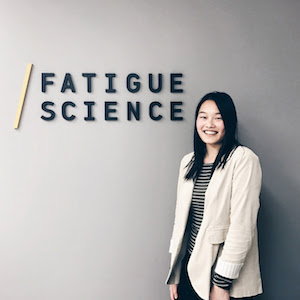

My Story
Take a look at my experiences
-

2002
Rhythmic Gymnastics
Growing up, I dedicated my time to the sport of rhythmic gymnastics. For 12 years, I trained and competed nationally; eventually reaching my goal of making the Canadian National Team in 2012.
-

2015
Studying at UBC
I started my BSc at UBC, majoring in computer science. Previously unexposed to the field, I found that I had an aptitude and interest for it.
-

2016
Fatigue Science
At my first co-op position, I worked on applications that interfaced with wearable sleep-tracking bands through BLE and serial port. I enjoyed advancing the product as a member of the engineering team.
-

2017
Awake Labs
I spent the summer working for a much smaller start-up where I took on a lot more responsibility. It was interesting to consider a different set of obstacles as I contributed to a product that was not yet in production.
-

2018
ETH Zürich
Returning to my studies, I jumped at the opportunity to join the exchange program and study at ETH Zürich where I challenged myself both academically and personally.
-
2018
Verity Studios
After my exchange, I stayed in Switzerland to complete an internship at a company specializing in indoor drone show systems.
-
Let's
Work
Together!